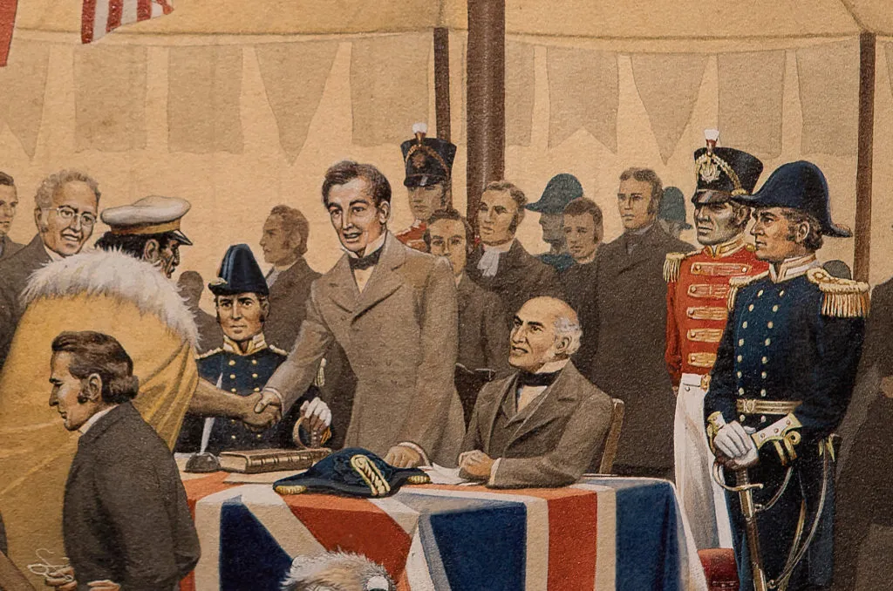

The Māori who agreed to sign did so because they wanted the British to govern, which means to make laws about behaviour. Many people today believe that most Māori would not have signed the Treaty if the Māori version had used 'rangatiratanga' for 'sovereignty'.

On 6 February 1840, te Tiriti o Waitangi was signed at Waitangi in the Bay of Islands by Captain William Hobson, several English residents, and between 43 and 46 Māori rangatira.
The British Government decided that Hobson would ask Māori rangatira to sign a treaty with Queen Victoria. Hobson would act on the Queen's behalf because she was in England. A treaty is an agreement or contract between two or more people, groups, or countries.

There was considerable pressure on the British government to intervene in New Zealand in the late 1830s, due to a variety of reasons. For example:
- ongoing issues with European lawlessness
- concerns from humanitarians about the impact of colonisation on indigenous people, including the illnesses overwhelming Māori
- land speculators tried to buy large areas from Māori who had no tradition of this form of permanent transfer of land ownership
- the French and Americans were taking a greater interest in New Zealand, including an attempt by France to colonise Akaroa
- in May 1839, the New Zealand Company — an independent organisation unauthorised by the British government — sent agents to New Zealand who ‘purchased’ the Port Nicholson block from Māori on 27 September. By then the company had sent colonists. The fear was that an independent colony would clash with Māori.
The day begins with a dawn service at 5am in Te Whare Runanga, the carved meeting house. After the dawn service, there are celebrations all day across the Treaty Grounds and the rest of the country. You'll find Waitangi Day traditions like dance and music performances, and lots of local artists and performers.